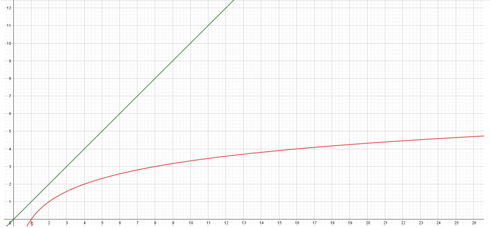

Algorithmes de recherche dichotomique 🔪⚓︎
Programme
| Notions | Compétences | Remarques |
|---|---|---|
| Recherche dichotomique dans un tableau trié | Montrer la terminaison de la recherche dichotomique à l’aide d’un variant de boucle. | Des assertions peuvent être utilisées. La preuve de la correction peut être présentée par le professeur. |
Activité 1 - Je joue contre l'ordinateur
Exécuter le programme du jeu du nombre mystère. Faire quelques parties, expliquer la stratégie de l'ordinateur pour trouver le nombre mystère.
A
Z
Solution
A chaque fois, il se place au milieu.
Lorsque le nombre est compris entre 1 et 100, en combien d'essais au maximum l'ordinateur trouve-t-il la solution ?
Solution
En 7 essais.
Et si le nombre mystère est compris entre 1 et 200 ?
Solution
En 8 essais.
Définition et principe de la dichotomie
Le mot dichotomie vient du grec ancien διχοτομία, dikhotomia (« division en deux parties »).
La méthode de dichotomie fait partie des méthodes dites «diviser pour régner».
«dichotomie» se dit en anglais binary search.
Dichotomie, déroulement intuitif
- on se place au milieu de la liste.
- on regarde si la valeur sur laquelle on est placée est inférieure ou supérieure à la valeur cherchée.
- on ne considère maintenant que la bonne moitié de la liste qui nous intéresse.
- on continue jusqu'à trouver la valeur cherchée (ou pas)
Comprendre la méthode de dichotomie est relativement simple, mais savoir la programmer est plus difficile.
Pour des raisons d'efficacité, nous allons garder intacte notre liste de travail et simplement faire évoluer les indices qui déterminent le début et la fin de notre liste.
Une autre méthode pourrait être d'extraire à chaque étape une nouvelle liste (dont on espère qu'elle contient la valeur cherchée), mais la technique utilisée (le slicing de liste) consomme beaucoup trop de ressources.
Nous allons donc travailler avec trois variables :
indice_debut(en bleu sur le schéma)indice_fin(en bleu sur le schéma)indice_central, qui est égale à(indice_debut + indice_fin) // 2(en rouge sur le schéma)
Dans cet exemple nous cherchons 14 dans la liste triée [2, 3, 6, 7, 11, 14, 18, 19, 24].

Nous allons faire se rapprocher les indices indice_debut et indice_fin tant que indice_debut <= indice_fin
Activité 2 - Recherche d'appartenance
Compléter la fonction appartient_dichotomique qui prend en paramètre une liste Python ma_liste et un valeur valeur. Cette fonction renvoie True si valeur est dans ma_liste et False sinon.
A
Z
Activité 3 - Déroulé à la main : v = 9 est-il dans t = [1, 3, 6, 9] ?
Écrire le déroulé à la main. Voici le début à poursuivre de façon analogue :
- indice_debut = 0
- indice_fin = 3
- condition du while : True
- indice_centre = (0+3)//2 = 1
- valeur_centrale = ma_liste[indice_centre] = 3
- v == valeur_centrale →
False - valeur_centrale < v →
True - indice_debut = 2
- condition du while : True
- ...
Solution
- indice_debut = 0
- indice_fin = 3
- condition du while : True
- indice_centre = (0+3)//2 = 1
- valeur_centrale = ma_liste[indice_centre] = 3
- v == valeur_centrale →
False - valeur_centrale < v →
True - indice_debut = 2
- condition du while : True
- indice_centre = (2+3)//2 = 2
- valeur_centrale = ma_liste[indice_centre] = 6
- v == valeur_centrale →
False - valeur_centrale < v →
True - valeur_debut = 3
- condition du while : True
- indice_centre = (3+3)//2 = 3
- valeur_centrale = ma_liste[indice_centre] = 9
- v == valeur_centrale →
True - la fonction renvoie
True
Activité 4 - Déroulé à la main : v = 7 est-il dans t = [1, 3, 6, 9, 10] ?
Écrire le déroulé à la main, comme dans l'exercice précédent
Solution
- indice_debut = 0
- indice_fin = 4
- condition du while : True
- indice_centre = (0+4)//2 = 2
- valeur_centrale = ma_liste[indice_centre] = 6
- v == valeur_centrale →
False - valeur_centrale < v →
True - indice_debut = 3
- condition du while : True
- indice_centre = (3+4)//2 = 3
- valeur_centrale = ma_liste[indice_centre] = 9
- v == valeur_centrale →
False - valeur_centrale < v →
False - indice_fin = 2
- condition du while : False
- la fonction renvoie
False
👉 On voit dans cet exemple pourquoi l'instruction while indice_debut <= indice_fin : est absolument nécessaire.
Activité 5 - Recherche d'indice
Compléter la fonction recherche_dichotomique qui prend en paramètre une liste Python ma_liste et un valeur valeur. Cette fonction renvoie son indice si valeur est dans ma_liste et None sinon.
A
Z
Activité 6 - Une fête
Nicolas organise une fête, et demande à ses amis s'ils viendront. Dès qu'un ami lui répond favorablement, il l'ajoute dans liste_amis.
Compléter le code ci-dessous afin de pouvoir déterminer si Vincent, Romain et Valérie ont décidé de venir (bien respecter les majuscules, minuscules et accents). La liste liste_amis est dans du code caché.
Vous devez absolument réaliser une recherche dichotomique et pas une recherche naïve. Attention, c'est à vous de créer ma_liste_amis qui est utilisée dans les tests. (Vous pouvez regader l'astuce plus bas, en cas de besoin)
A
Z
Astuce
N'y-a-t-il pas une condition sur la liste dans laquelle on réalise la recherche dichotomique ?
Solution pour Vincent, Romain et Valérie
>>> appartient_dichotomique(ma_liste_amis, "Vincent")
False
>>> appartient_dichotomique(ma_liste_amis, "Romain")
False
>>> appartient_dichotomique(ma_liste_amis, "Valérie")
True
>>>
Logarithme de recherche par dichotomie : à savoir refaire 💚
def recherche_dichotomique(ma_liste, valeur) :
indice_debut = 0
indice_fin = len(ma_liste) - 1
while indice_debut <= indice_fin : # (1)
indice_centre = (indice_debut + indice_fin) // 2 # (2)
valeur_centrale = ma_liste[indice_centre]
if valeur_centrale == valeur :
return indice_centre
if valeur_centrale < valeur :
indice_debut = indice_centre + 1 # (3)
else :
indice_fin = indice_centre - 1 # (4)
return None
 Il faut bien
Il faut bien <=et pas<- Il faut une division entière donc
//et pas/ - 👉 On cherche à droite
- 👈 On cherche à gauche
Prenez le temps de lire les commentaires (cliquez sur les +)
Terminaison de l'algorithme de recherche dichotomique
Est-on sûr que l'algorithme va se terminer ?
La boucle while qui est utilisée doit nous inciter à la prudence.
Il y a en effet le risque de rentrer dans une boucle infinie.
Pourquoi n'est-ce pas le cas ?
Aide : observer la position des deux flèches bleues lors de l'exécution de l'algorithme
La condition de la boucle while est indice_debut <= indice_fin, qui pourrait aussi s'écrire indice_fin >= indice_debut.
Au démarrage de la boucle, on a :
indice_debut = 0
indice_fin = len(L) - 1
Ceci qui nous assure donc de bien rentrer dans la boucle.
Ensuite, à chaque étape, les deux variables indice_debut et indice_fin vont se rapprocher jusqu'à ce que le programme rencontre un return ou bien jusqu'à ce que indice_fin devienne inférieur à indice_debut.
Ceci nous assure donc que le programme va bien se terminer.
Variant de boucle
On dit que la valeur indice_fin - indice_debut représente le variant de boucle de cet algorithme.
Ce variant est un nombre entier, d'abord strictement positif, puis qui va décroître jusqu'à la valeur 0.
Activité 7 - Complexité de l'algorithme de recherche dichotomique
Nous allons considérer que la complexité est due au nombre d'étapes nécessaires pour obtenir le résultat.
Quel est le pire des cas de recherche dichotomique d'une valeur dans une liste triée ?
Le pire des cas est lorsque l'élément n'est pas présent dans la liste.
Combien d'étapes (au maximum) sont-elles nécessaires pour arriver à la fin de l'algorithme ?
Imaginons que la liste initiale possède 8 valeurs.
Après une étape, il ne reste que 4 valeurs à traiter.
Puis 2 valeurs.
Puis une seule valeur.
Il y a donc 3 étapes avant de trouver la valeur cherchée.
Combien d'étapes en fonction de la taille de la liste ?
1. Remplissez le tableau ci-dessous :
| taille de la liste | 1 | 2 | 4 | 8 | 16 | 32 | 64 | 128 |
|---|---|---|---|---|---|---|---|---|
| nombre d'étapes | _ | _ | _ | 3 | _ | _ | _ | _ |
Solution
| taille de la liste | 1 | 2 | 4 | 8 | 16 | 32 | 64 | 128 |
|---|---|---|---|---|---|---|---|---|
| nombre d'étapes | 0 | 1 | 2 | 3 | 4 | 5 | 6 | 7 |
2. Pouvez-vous deviner le nombre d'étapes nécessaires pour une liste de 4096 termes ?
Solution
12 étapes
3. Pour une liste de \(2^n\) termes, quel est le nombre d'étapes ?
Solution
\(n\) étapes
Nombres d'étapes pour une liste de taille \(n\)
Sachant qu'à chaque itération de la boucle on divise à peu près (division entière) le tableau en \(2\), cela revient donc à se demander combien de fois faut-il diviser le tableau en \(2\) pour obtenir, à la fin, un tableau comportant un seul élément ?
🙃 Autrement dit, combien de fois faut-il diviser n par 2 pour obtenir 1 ?
Le logarithme en base 2
Une mesure de la complexité est donc le nombre \(k\) tel que \(2^k=n\).
Nous n'allons pas rentrer dans les détails, mais il faut savoir qu'il existe une fonction mathématique (réciproque de la fonction qui à \(x\) associe \(2^x\)) qui permet de résoudre ce problème :
la fonction "logarithme en base 2" notée \(\text{log}_2\)
\(k=\text{log}_2(n)\)

La courbe en rouge correspond à la complexité de la recherche dichotomique (logarithmique en base 2), et la droite verte à celle de la recherche séquentielle (linéaire).
Attention calculatrices
les calculatrices ont une touche log et une touche ln qui donnent respectivement le logaritme en base 10, et le logarithme en base \(\text{e}\).
On peut obtenir le résultat du logarithme en base 2 d'un nombre de la façon suivante, par exemple pour calculer \(\text{log}_2(1024)\) :
( log 1024 ) \(\div\) log 2
ou bien
( ln 1024 ) \(\div\) ln 2
Complément sur les fonctions logarithme
- La fonction \(\text{log}_2\) est la fonction réciproque de celle qui à tout réel \(x\) associe \(2^x\)
- La fonction \(\text{log}\) est la fonction réciproque de celle qui à tout réel \(x\) associe \(10^x\)
- La fonction \(\text{ln}\) est la fonction réciproque de celle qui à tout réel \(x\) associe \(\text{e}^x\)
Le logarithme en base 2 en Python
En Python, il suffit d'importer la fonction log2
Tester le script ci-dessous :
A
Z
Complexité logarithmique de la recherche dichotomique 💚 A retenir
La recherche dichotomique se fait avec une complexité logarithmique.
On rencontrera parfois la notation \(O(\log_2(n))\).
Le \(O\) se prononce "grand O" (la lettre)
Cette complexité est bien meilleure qu'une complexité linéaire. Le nombre d'opérations à effectuer est très peu sensible à la taille des données d'entrée, ce qui en fait un algorithme très efficace.
N'oubliez pas que dans le cas de la recherche dichotomique, le tableau doit être trié !
Activité 8 - Temps de calcul
Recopier et exécuter le code suivant dans votre éditeur python local (pas en ligne)
from timeit import timeit
def dicho(tableau: list, x: int) -> bool :
"""
:param tableau: une liste d'entiers triés par ordre croissant
:param x: de type int
:returns: bool : True si x est dans tableau, False sinon
>>> dicho([1, 3, 4, 9], 4)
True
>>> dicho([1, 3, 4, 9], 11)
False
"""
deb = 0
fin = len(tableau) - 1
mil = (deb + fin) // 2
while deb <= fin :
if tableau[mil] == x:
return True
elif tableau[mil] < x:
deb = mil + 1
else :
fin = mil - 1
mil = (deb + fin) // 2
return False
tailles = [500, 2500, 12500, 62500]
# tref est le temps de calcul pour une liste de taille 100
liste_ref = [i for i in range(100)]
tref = timeit("dicho(liste_ref, -1)", number = 1000, globals = globals())
print("n = 100 -> tref = ",round(tref, 6))
for n in tailles :
print("n =", n, end='')
tab = [i for i in range(n)]
# Calcul du temps pour des listes triées de tailles n
t = timeit("dicho(tab, -1)", number = 1000, globals = globals())
print('\t-> temps = ',round(t, 6), '\t x', round(t/tref, 2) )
tref = t
Que remarque-t-on?
A chaque étape, n est multilié par 5, et on voit dans le tableau que le temps est multiplié par un nombre très inférieur à 5.
Un exemple spectaculaire de l'efficacité de la recherche par dichotomie

Imaginons un annuaire qui contienne les noms, prénoms, adresses.....des 7 milliards d'êtres humains vivant sur la terre.
🤔 Quel est le nombre maximum d'étapes pour trouver un individu ?
Plaçons nous dans le pire des cas.
Comme à chaque étape on divise le nombre de personne par 2, la question revient à : combien de fois faut-il que je divise 7 milliards par 2 pour qu'il n'en reste qu'un ?
Cela revient à trouver \(n\) tel que \(\dfrac{7000000000}{2^n}=1\) , c’est à dire \(2^n=7000000000\) .
A la calculatrice on voit que \(2^{32}=4294967296\) et que \(2^{33}=8589934592\).
Il faut donc au maximum 33 étapes
🌵 Un algorithme qui balaye la liste du début à la fin aurait fait 1 étape pour la première personne et 7 milliards d'étapes pour la dernière !
Un algorithme par parcours séquentiel de liste aurait nécessité, dans le pire des cas 7 milliards d’étapes. L’algorithme par dichotomie qui n'en nécessite que 33 est donc énormément plus efficace.
Cependant
Cependant, il ne faut pas perdre de vue que dans le cas de la recherche dichotomique, il est nécessaire d'avoir un tableau trié.
Attention
Si au départ le tableau n'est pas trié, il faut rajouter la durée du tri.
Activité 9 - Compléter la fonction dichotomie
-
prenant en paramètre un tableau de nombres triés dans l'ordre croissant
nombreset une valeurcible -
renvoyant
Truesicibleest une valeur denombres,Falsedans le cas contraire.
Exemples
>>> dichotomie([1, 2, 3, 4], 2)
True
>>> dichotomie([1, 2, 3, 4], 1)
True
>>> dichotomie([1, 2, 3, 4], 4)
True
>>> dichotomie([1, 2, 3, 4], 5)
False
>>> dichotomie([1, 2, 3, 4], 0)
False
>>> dichotomie([1], 1)
True
>>> dichotomie([1], 0)
False
>>> dichotomie([], 1)
False
Remarque
Vous utiliserez obligatoirement un algorithme de recherche dichotomique.
Compléter ci-dessous
A
Recherche par dichotomie
Il s'agit d'un algorithme classique. Le tableau pris en paramètre doit obligatoirement être trié.
À chaque itération, on se demande si la valeur centrale est égale à la cible :
- si oui, on renvoie immédiatement
True - si non, cette cible est soit :
- supérieure à la valeur centrale : il faut chercher dans la partie droite du tableau (
debut = milieu + 1) - inférieure à la valeur centrale : il faut chercher dans la partie gauche du tableau (
fin = milieu - 1)
- supérieure à la valeur centrale : il faut chercher dans la partie droite du tableau (
La zone de recherche (l'écart entre fin et debut) se réduit à chaque itération : si on finit par avoir fin < debut, c'est que la cible n'est pas dans le tableau. On sort de la boucle et renvoie False.
Nombre maximal de tours de boucles
Prenons un écart d'indice initial fin - debut égal à \(10^9\), (ce qui est très grand).
Dans le pire des cas, où la cible n'est pas présente, on réalise tous les tours de boucles possibles.
- Au premier tour, on a un écart environ de \(\frac{10^9}{2}\), c'est à dire de \(5 \times 10^8\)
- Au deuxième tour, on a un écart environ de \(\frac{5 \times 10^8}{2}\) c'est à dire \(25 \times 10^7\)
- Ainsi de suite ...
- Au trentième tour, on a un écart d'environ \(\frac{10^9}{2^{30}}\) c'est à dire d'environ 1.
Ainsi, dans une liste de taille \(10^9\), en au plus environ 30 tours on sait si l'élément cible est présent.
Z
Activité 10 - Déterminer l'indice d'un nombre dans une liste
On considère dans cet exercice des tableaux non vides contenant des nombres entiers, tous distincts, triés dans l'ordre croissant.
On cherche à déterminer l'indice d'une valeur cible dans ce tableau à l'aide d'une recherche dichotomique dans sa version itérative.
Écrire la fonction indice qui prend en paramètres le tableau de nombres tableau et la valeur cherchée cible.
Si la cible est dans le tableau, la fonction renverra son indice. Dans le cas contraire, la fonction renverra None.
Attention
Les tableaux des tests secrets peuvent être très grands. Une recherche linéaire naïve prendrait trop de temps lors de l'exécution.
Les tests secrets limitent le nombre de lectures dans le tableau à 100. Si votre code accède à plus de 100 valeurs dans le tableau, une erreur sera levée.
Exemples
>>> tableau = [23, 28, 29, 35, 37]
>>> indice(tableau, 23)
0
>>> indice(tableau, 29)
2
>>> indice(tableau, 37)
4
>>> indice(tableau, 10)
None
>>> indice(tableau, 100)
None
Question
Compléter le script ci-dessous :
A
Recherche dichotomique itérative : à connaître
Il s'agit de l'algorithme de recherche dichotomique classique.
La recherche de l'indice du milieu
Le calcul de l'indice du milieu mérite toutefois quelques commentaires. Ici on propose milieu = (debut + fin) // 2.
Or, dans certains langages de programmation comme le C, la taille des entiers est limitée. Ce calcul milieu = (debut + fin) // 2 peut parfois excéder cette taille limite. En effet, si les deux indices debut et fin sont grands, leur somme debut + fin peut dépasser la valeur limite.
Dans ce cas on calcule l'indice du milieu en utilisant la largeur de l'intervalle : milieu = debut + (fin - debut) // 2.
Dans le cas présent, le problème ne se pose pas car, en Python, les entiers n'ont pas de taille limite. Toutefois, Si l'on avait manipulé des nombres flottants le problème serait apparu :
Exemple
>>> debut = 2.0 ** 1023
>>> fin = 2.0 ** 1023 + 1
>>> debut + fin # dépassement de capacité
inf
>>> (debut + fin) / 2 # dépassement de capacité lors de la somme
inf
>>> debut + (fin - debut) / 2
8.98846567431158e+307
Z
Activité 11 - Étude d'une panne
Une sonde interroge à intervalles réguliers l'état de fonctionnement d'un système électronique. Celui-ci peut être en marche ou en panne.
La sonde est programmée pour enregistrer les résultats de ses requêtes dans un log. Il s'agit d'un tableau de booléens (une list Python) dans lequel les valeurs True précèdent les False. La valeur True indique que le système est en marche, False qu'il est en panne.
Une panne nécessite une intervention humaine et ne peut donc pas disparaître seule : elle persiste jusqu'à la fin de l'enregistrement.
# 0 1 2 3 4
log = [True, True, False, False, False]
Lors d'une vérification on constate que le système est en panne : le log contient au moins une valeur False en dernière position. On se demande à quel moment a débuté cette panne.
Dans l'exemple précédent, le premier False est à l'indice 2 : la panne a débuté à l'instant 2.
Écrire la fonction indice_panne qui prend en paramètre le tableau de booléens log et renvoie l'instant du démarrage de la panne.
On garantit que le log n'est pas vide et que, au moment de la vérification, le système est en panne (la dernière valeur du tableau est False).
Attention
La panne du système a aussi corrompu le fichier de log. Vous ne pouvez pas lire plus de 500 valeurs dans celui-ci. Passé ce nombre de lectures, tout nouvel accès lèvera une erreur.
Il est donc important de bien concevoir votre algorithme car les logs utilisés dans les tests secrets peuvent être très longs : un milliard de valeurs !
Exemples
>>> indice_panne([True, False])
1
>>> indice_panne([False, False, False])
0
>>> indice_panne([True] * 10 + [False] * 100)
10
>>> indice_panne([True, True, False, False, False])
2
Question
Compléter le script ci-dessous :
A
Mon info
La liste passée en paramètre est une liste triée. Dans ce cas-là, c'est judicieux de penser à une recherche dichotomique.
Z
Astuce (1)
Il s'agit d'une recherche dans un tableau trié : les valeurs True sont au début, les False à la fin.
Astuce (2)
Si le log ne contient que des valeurs False, il faut renvoyer 0.
Dans le cas contraire, l'indice cherché est l'unique indice i qui vérifie log[i - 1] and not log[i].